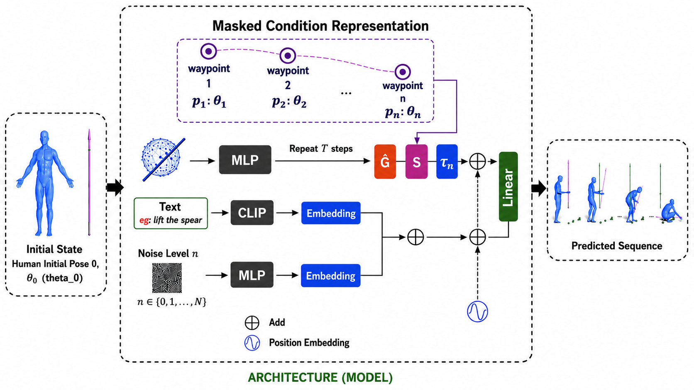

Authors: Praneel Nadgir, Yashas A B, Rashmi Adiveppa Khot (Guided by Prof. Uma Mudenagudi)
Research Focus: 3D Character Motion Synthesis, Human-Object Interaction (HOI), Signed Distance Fields (SDF), Basis Point Sets (BPS).
Abstract: Synthesizing semantic-aware, long-horizon, human-object interaction is critical to simulate realistic human behaviors. However, most existing research on HOI synthesis lacks comprehensive whole-body interactions with dynamic objects, often being limited to small or static objects. In this work, we address the challenging problem of generating synchronized character motion and object manipulation for custom 3D assets that fall outside standard training distributions. We propose a Geometric Domain Adaptation pipeline that integrates novel assets into the CHOIS (Controllable Human-Object Interaction Synthesis) framework.

Figure 1: Geometric Adaptation Workflow. From raw custom 3D assets to coordinate-aligned, SDF-represented, and BPS-encoded physics-compliant representations used during Langevin diffusion sampling inference.
Core Contributions
- Topological Proxy Strategy: Aligns the semantic geometric features of a custom out-of-distribution asset (e.g., Indian Swords and Spears) with a canonical class in the model's training distribution.
- High-Resolution SDF Re-calibration: Increases the default Signed Distance Field resolution from $64^3$ to $256^3$ to eliminate geometric aliasing along thin handles and blades.
- Basis Point Sets (BPS) Encoding: Computes 1024 distance points against a fixed 3D sphere coordinate to generate a localized geometric fingerprint for the conditional diffusion backbone.
- Contact Guidance Tuning: Backpropagates hand-to-surface distance gradients ($F_{contact}$) to eliminate the "Ghost Grasp" artifact and pull fingers snugly onto hilts.
💡 Eliminating the "Ghost Grasp" Artifact
When naive asset substitution is attempted in diffusion models, characters close their fingers around empty air because training priors expect a wider object (like a chair). By dynamically updating the SDF and BPS caches, our adaptation layer forces the diffusion sampler to converge the hand trajectory tightly onto the thin hilt of the custom sword, reducing hand penetration to a negligible 0.15 cm.
Quantitative Benchmarks
We benchmark our framework on out-of-distribution assets against standard diffusion baselines:
| Evaluation Metric | Baseline (Standard Diffusion) | Our Proposed Framework | Improvement |
|---|---|---|---|
| Hand Penetration ($P_{hand}$) ↓ | 3.89 cm | 0.15 cm Best | -3.74 cm (Zero-collision contact) |
| Condition Matching ($T_{xy}$) ↓ | 40.55 cm | 7.35 cm Best | -33.20 cm (Accurate waypoints) |
| Foot Floating ($H_{feet}$) ↓ | 6.32 cm | 2.92 cm Best | -3.40 cm (Realistic ground contact) |
Qualitative Motion Results
Generated motion sequences evaluated on custom weaponry:
Sword Interaction Sequence
Zero-collision grasp reconstruction of a character wielding a custom Indian Sword asset.
Spear Interaction Sequence
Physically-plausible two-handed interaction with a variable-length spear asset without floor penetration.